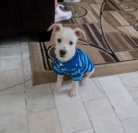
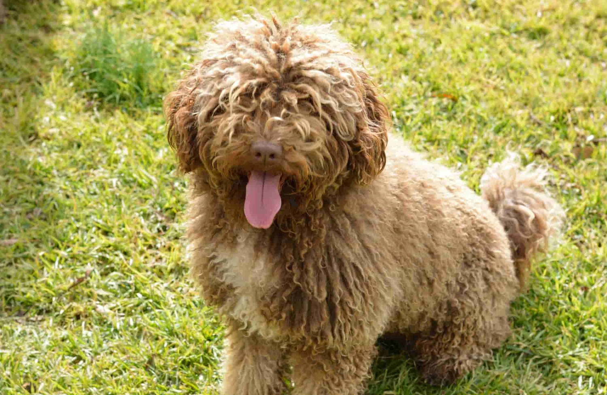
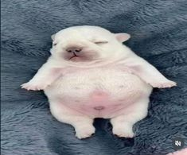
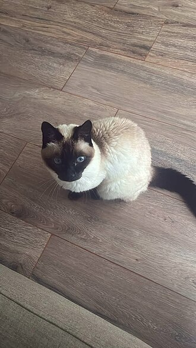

----PERROS Y GATOS EN ADOPCION----
En esta sección podrás conocer algunos de los perritos y gatitos que están buscando una familia responsable que pueda brindarles un hogar, alimento, cuidados y mucho cariño. Cada animal tiene su propia historia y personalidad. Algunos son juguetones, otros tranquilos, pero todos tienen algo en común: necesitan una oportunidad para encontrar un hogar donde sean queridos y respetados.
Antes de adoptar, es importante recordar que tener una mascota es una responsabilidad que requiere tiempo, atención y cuidados. Una adopción responsable ayuda a que el animal tenga una vida más segura y feliz. Conoce a nuestros animalitos disponibles y encuentra a un nuevo compañero para tu familia.
MILO MYERS

Macho
tiene 3 meses no tiene raza
es muy jugueton le gusta comer mucho
----------------------------
CORUNDA

hembra
tiene 2 años es raza de agua español
es muy tranquila le gusta dormir
----------------------------
JONH

Macho
tine 1 mes es de raza pibble
es muy amigable le gusta el mar
----------------------------
MIAUT

Hembra
tiene 1 año es de raza siames
es muy solitaria es muy relajada